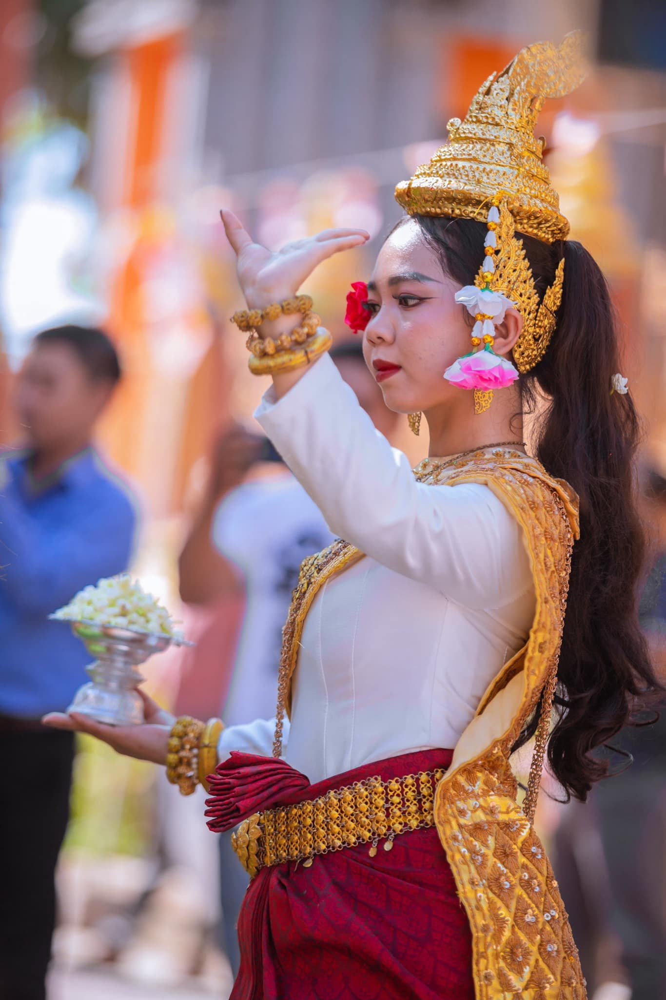
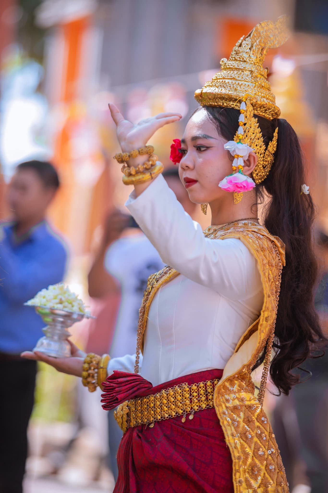

អ្នកទាំងឡាយ ចូរឃើញនូវបមាទៈ ថាជាភ័យផង ឃើញនូវអប្បមាទៈ ថាជាគុណដ៏ក្សេមផង ហើយចូរចម្រើនមគ្គមានអង្គ ៨ នេះជាអនុសាសនីរបស់ព្រះពុទ្ធ ។

ការន្សំនូវបាប តែងនាំមកនូវទុក្ខ - ការសន្សំនូវបុណ្យ តែងនាំមកនូវសេចក្ដីសុខ
ជនជាតិខ្មែរនៅតំបន់ខេត្តព្រះត្រពាំង ជាពិសេសនៅវត្តសាសនសាមគ្គីរង្សី អូរត្រាវ មានពិធីបុណ្យប្រពៃណីជាច្រើន ដែលផ្សារផ្ជាប់រវៀងវប្បធម៌និងសាសនា។ ក្នុងមួយឆ្នាំ កម្មវិធីបុណ្យសំខាន់ៗមានដូចជា បុណ្យចូលឆ្នាំថ្មីប្រពៃនីខ្មែរ ប្រព្រឹតឡើងនៅខែមេសា ដែលមានល្បែងប្រជាប្រិយ និងការអបអរសាទរនៅវត្តអារាម។ បុណ្យភ្ជុំបិណ្ឌ ប្រារព្ធឡើងនៅខែកញ្ញា ដើម្បីឧទ្ទិសកុសលដល់ឧបការី ដែលចែកឋានទៅ។ បុណ្យកឋិនទាន នៅខែតុលា ប្រារព្ធឡើងដោយភាពរីរាយ នឹងស្រស់ស្អាតបំផុតនៃពុទ្ធបរិស័ទ ដើម្បីជាប្រយោជន៍ដល់វត្តអារាម នឹងព្រះសង្ឃដែលគង់នៅចាំព្រះវស្សា។ បុណ្យអុំទូក និងសំពះព្រះខែ នៅខែវិច្ឆិកា មានការប្រណាំងទូកង ដែលជាកម្មវិធីដ៏អស្ចារ្យសម្រាប់ប្រជាជនខ្មែរ ព្រមទាំងកម្មវិធីសំពះព្រះខែដើម្បីអរគុណម្ចាស់ទឹកម្ចាសដីដែលជួយប្រជាជនក្នុងការដាំដំណាំ នឹងជាការរួបរួមសមជិកគ្រួសារយ៉ាងសប្បាយរីរយា ។ ពិធីទាំងនេះតែងតែជួបប្រទះនឹងភាពរីករាយ សម្រស់ស្រស់ស្អាត ស្ដាប់នូវភ្លេងបុរាណ និងអាហារខ្មែរ ដែលបង្ហាញពីភាពសាមគ្គី និងការរក្សាបេតិកភណ្ឌវប្បធម៌របស់ជនជាតិខ្មែរ។


 



បុរសអ្នកមិនមានការចេះដឹងនេះ តែងចាស់ (ឥតអំពើ) ដូចគោបម្រើ សាច់របស់វា តែងចម្រើនឡើង តែប្រាជ្ញារបស់វា មិនចម្រើនឡើយ